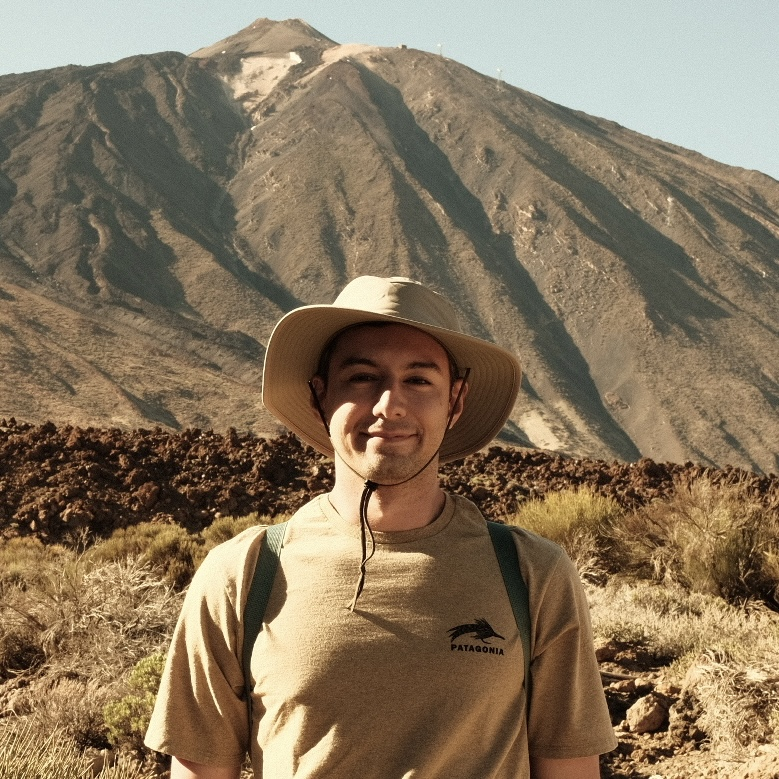

yilmazdoga.net
Home
CV

Google Scholar
GitHub
Stack Overflow
LinkedIn
doga.yilmaz@ucl.ac.uk
Education
PhD in Computer Science
University College London
Department of Computer Science
Supervisor:
Assoc. Prof. He Wang
October 2024 - Present
MSc in Artificial Intelligence
Özyeğin University
Graduate School of Science and Engineering
Supervisor:
Assoc. Prof. Furkan Kıraç
Thesis:
Illumination-guided inverse rendering benchmark: Learning real objects with few cameras
February 2021 - October 2023
BSc in Computer Science
Özyeğin University
Department of Computer Science
Supervisor:
Assoc. Prof. Furkan Kıraç
Thesis:
Deep Residual Autoencoder for Real Image Denoising
September 2016 - September 2020
Industry Experience
Computer Vision Research Engineer
Fishency Innovation
Stavanger, Norway
Manager:
Assoc. Prof. Furkan Kıraç
August 2022 - January 2025
Academic Experience
Postgraduate Teaching Assistant
University College London
London, UK
November 2024 - Present
Research Intern
University College London
London, UK
November 2023 - October 2024
Research & Teaching Assistant
Özyeğin University
Istanbul, Turkey
July 2019 - October 2023